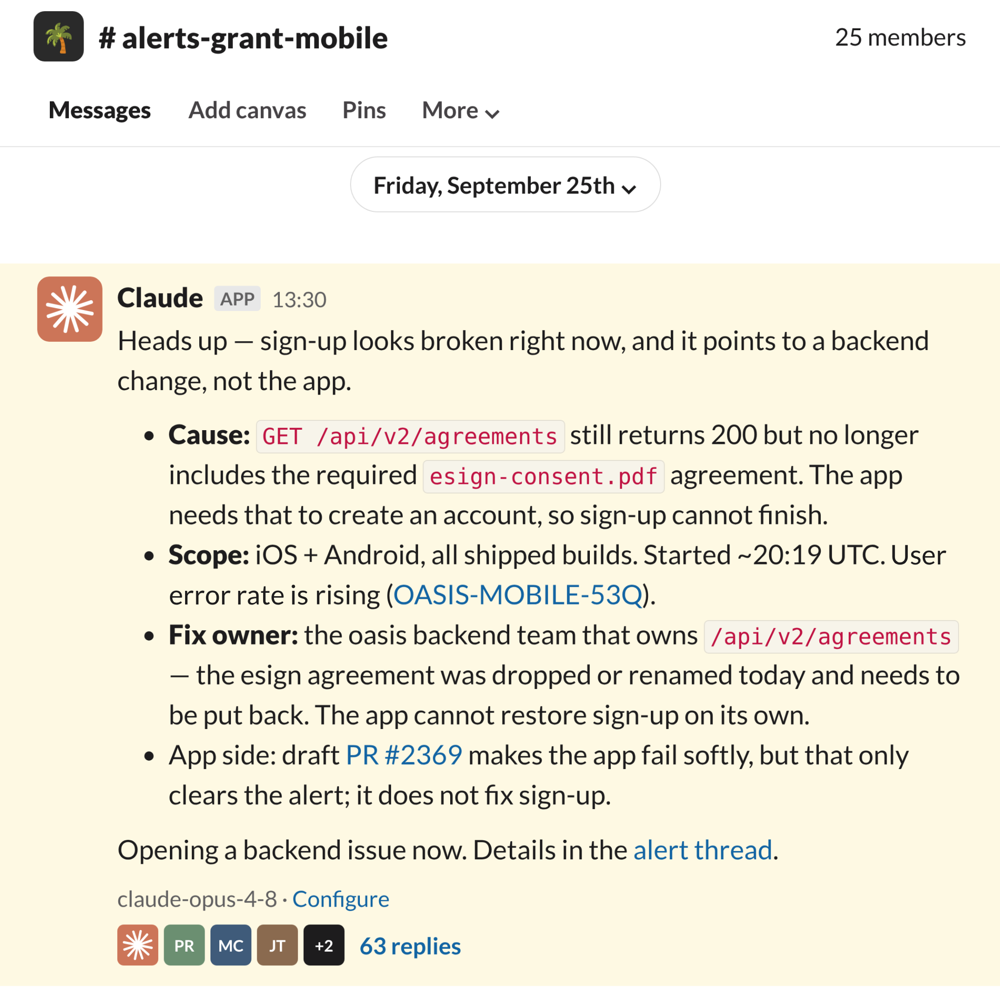
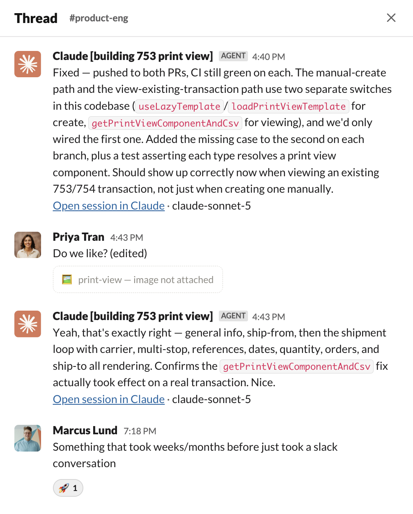
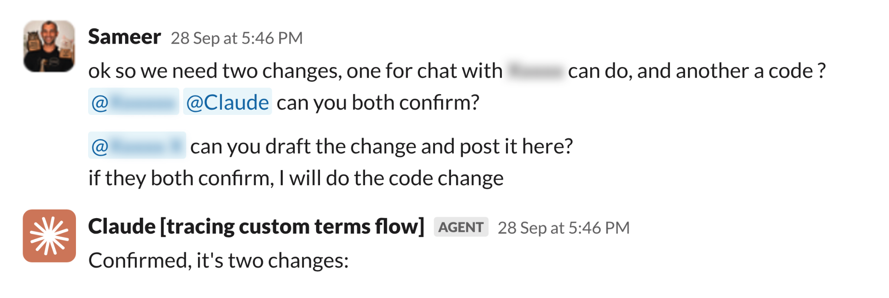
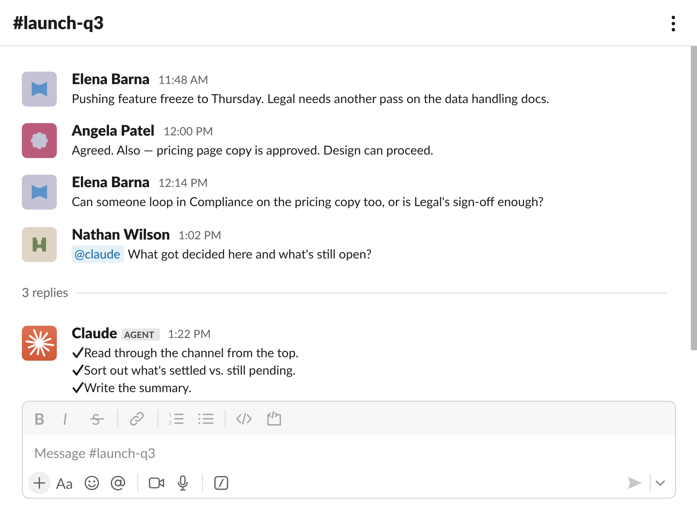
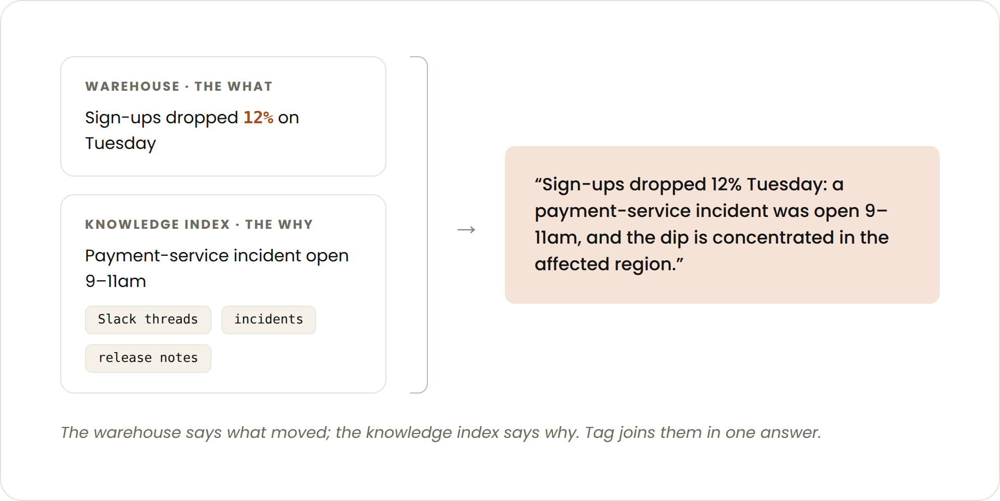
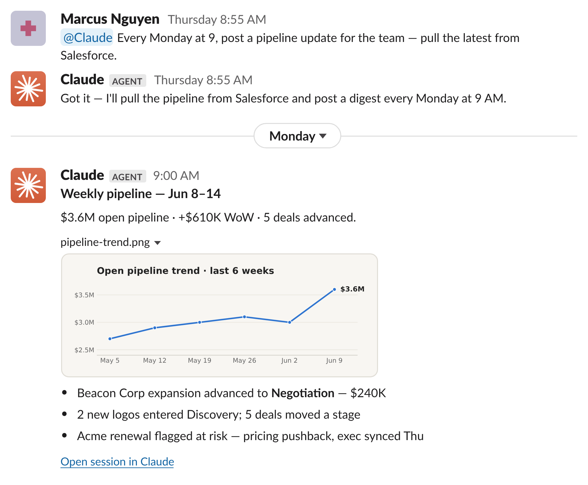
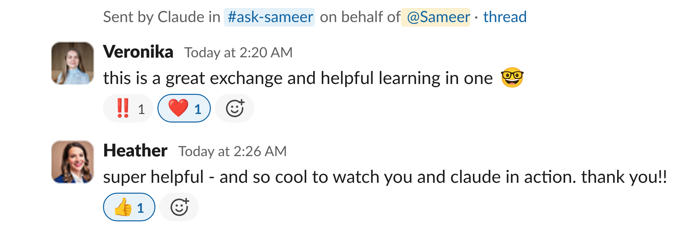
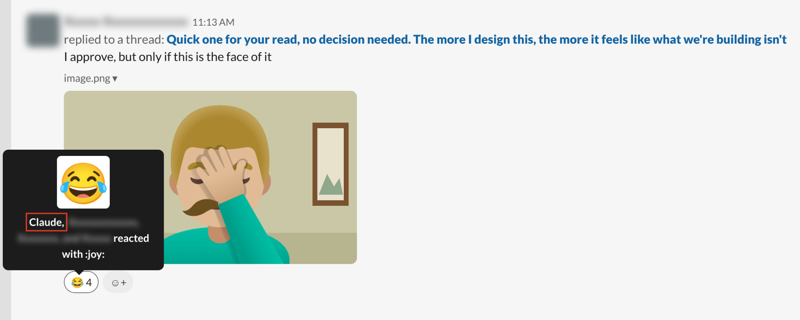

스타트업은 대개 작은 팀이 여러 역할을 겸하며 빠른 속도로 일합니다. 여러 면에서 Claude Tag(베타)는 스타트업이 일하는 방식에 잘 맞습니다. 맥락이 모여 있는 Slack 채널에 @Claude로 Claude를 불러들이고, 커넥터(connector)를 추가하고, 팀이 함께 작업을 맡기고 방향을 잡아 주면 됩니다.
영상: 이미 일하고 있는 바로 그곳에 Claude를 태그하세요 (Tag Claude in, right where you already work)
Claude Tag를 처음 쓰는 스타트업 팀이 가장 자주 묻는 질문 중 하나는 "어떤 채널에 Claude를 먼저 추가해야 하나요?"입니다. 이 질문에 답하기 위해, 빠르게 성장하는 스타트업 여덟 곳과 이야기를 나누며 Claude Tag가 이들 팀 안에서 어떻게 쓰이는지 살펴봤습니다.
법률 회사를 새롭게 만드는 일부터 차세대 자원 관리(resource planning) 소프트웨어를 만드는 일까지, 다양한 비전을 가진 회사의 리더들에게 이야기를 들었습니다. 어떤 회사는 거의 모든 채널에 Claude를 추가했고, 어떤 회사는 한두 가지 특정 유스케이스에 깊이 집중했습니다.
| 회사 | 온콜 | 스레드 → PR | 회사의 두뇌 | 셀프서비스 데이터 | 정기 리포팅 |
|---|---|---|---|---|---|
| Kikoff | ● | ● | ● | ● | |
| NavigateAI | ● | ● | ● | ● | |
| Campfire | ● | ● | ● | ||
| Flagler Health | ● | ● | ● | ||
| Moritz | ● | ● | |||
| Orderful | ● | ● | ● | ● | |
| Valence | ● | ● | ● | ||
| Descript | ● | ● | ● |
하지만 이야기를 나눈 모두에게는 공통된 "아하!" 순간이 있었습니다. 몇 분짜리 Claude Tag 대화가 며칠 걸릴 일을 대신하거나, 그렇지 않았다면 묻혀 있었을 인사이트를 찾아냈다는 사실을 깨달은 순간입니다.
가장 흔한 사례들을 이 가이드에 담았습니다. 각 사례에는 창업자가 팀에 실질적인 변화를 가져올 유스케이스를 찾아 배포할 수 있도록 돕는 실용적인 구현 세부 사항을 함께 실었습니다. 이야기를 나눈 스타트업들이 실제로 얻은 변화의 예는 다음과 같습니다.
이 가이드에서는 선도적인 스타트업들이 Claude Tag를 쓰며 얻은 가장 흔한 유스케이스, 채널, 그리고 공통된 인사이트를 공유합니다.
이야기를 나눈 여덟 스타트업은 Slack 곳곳에서 Claude Tag를 쓰고 있지만, 시작하기 가장 좋은 곳으로 몇몇 채널이 거듭 언급됐습니다.
설정 예시:
#on-call #alerts-ci #deploy-watch #support-escalations@Claude remember for this channel: monitor alerts and immediately triage each one in its own thread. Check for an existing ticket. Query the data first, then theorize, and separate what you verified from what you inferred. If it's real, name the likely root cause with links, tag the owner, and open a draft PR only if the fix is contained. If no action is needed, say so. After each incident, add what you learned to [lessons file].
트리아지 채널은 시끄럽기로 악명이 높습니다. Sentry 에러, Datadog 알림, 고객 버그 신고, 지원 요청이 끊임없이 끼어들어 잡음 속에서 신호를 찾기 어렵습니다. 그래서 보통 팀이 Claude에게 가장 먼저 맡기는 일이 이것입니다.
Claude가 채널에서 1차 대응자(first responder) 역할을 하면, 온콜 엔지니어가 노트북을 열기도 전에 첫 번째 검토가 끝나 있는 경우가 많습니다. Claude는 올라오는 항목을 하나씩 읽고, 코드베이스와 접근 가능한 도구를 조사한 뒤, 찾아낸 내용을 공유합니다. 수정 범위가 국한돼 있으면 draft PR을 열고, 그렇지 않으면 조사 내용을 첨부해 적절한 사람에게 이슈를 넘깁니다. 이런 설정에서는 각 수정이 머지되기 전에 사람이 검토하고, 정말 새로운 문제만 사람이 직접 조사를 시작하면 됩니다.
재무팀을 위한 AI 네이티브 ERP를 만드는 Campfire에서는, 자사 AI 에이전트가 완성한 답변 일부가 사용자에게 전달되지 않는다는 신고에 한 엔지니어가 Claude를 태그했습니다. 21분 뒤 Claude는 PR을 열었고, 그 PR은 당일 오후에 머지됐습니다.
Kikoff는 소비자가 신용을 쌓고, 유동성 문제를 해결하고, 재정적 안정을 이루도록 돕는 핀테크 스타트업입니다. Claude Tag는 회사 전반의 트리아지 채널에서 1차 대응자 역할을 합니다. 예를 들면 다음과 같습니다.
#deploys: 매 릴리스 후 무엇을 지켜볼지 Claude가 정하고, 릴리스로 망가진 것이 있으면 알립니다.#alerts-ci: 빌드가 실패하면 Claude가 원인을 찾아 draft PR로 수정안을 제안합니다.#alerts-sentry-backend: Sentry 예외와 크래시를 Claude가 먼저 살펴봅니다.#dog-fooding: 직원들이 도그푸딩하며 제기한 문제를 Claude가 조사하고 적절한 담당자를 태그합니다.#support: 지원 티켓을 Claude가 먼저 살펴봅니다.Kikoff는 처음에 멘션될 때만 Claude가 대화에 참여하도록 했는데, 가장 큰 성과는 팀이 Claude가 스스로 끼어들도록 허용한 뒤에 나왔습니다. 회원가입이 망가졌을 때 Claude는 원인을 백엔드 변경으로 추적하고, 영향 범위를 가늠하고, 수정을 맡을 팀을 지목하고, 그동안 앱이 부드럽게 실패(fail softly)하도록 draft PR을 열었습니다.

"모니터링이나 사람보다 Claude가 먼저 문제를 잡아낼 때마다 늘 신이 납니다. 한 사람이 직접 관리할 수 있는 맥락에는 한계가 있는데, Claude Tag는 맥락 일부를 정리하고 맡아 주고, 우리는 결과를 관리합니다."
Alex Dejeu, Kikoff 엔지니어링 매니저
NavigateAI는 건설 현장 팀을 위한 AI 코파일럿을 만듭니다. 이들은 약 90개 채널에서 Claude Tag를 알림 트리아지, 버그 배시(bug bash), 빠른 기능 개발, 지원 에스컬레이션에 쓰고 있습니다. 6월 이후 Claude는 Slack 스레드에서 바로 약 223개의 PR을 열었고, 그중 134개가 머지됐으며, 오픈부터 머지까지 걸린 시간의 중앙값은 2시간입니다.
트리아지는 NavigateAI에게 특히 가치 있는 유스케이스였습니다. Claude는 맥락을 아주 많이 갖고 있기 때문에, 처음 봤을 때는 놓쳤을 수도 있는 직관에 반하는 근본 원인을 찾아낼 수 있습니다.
"Claude Tag로 겪은 가장 큰 '와!' 순간은 부하 문제를 디버깅할 때였습니다. 한 고객의 호출이 실패하고 있어서 그 고객이 원인처럼 보였어요. 보통 사람이라면 계속 그 고객을 추적했을 겁니다. 그런데 Claude는 다른 데이터 소스에 훨씬 많이 접근할 수 있었기 때문에, 실제 원인이 같은 시간대에 돌던, 계측(instrumentation)되지 않은 내부 크론 작업이라는 걸 찾아냈습니다."
Mike Chen, NavigateAI 엔지니어링 총괄
Claude 덕분에 이슈 평균 해결 시간(MTTR)이 개선됐습니다. 한 사례에서는 Sentry 알림이 울린 지 8분 만에 Claude가 근본 원인을 찾았고, 알림 후 93분 만에 수정이 머지됐습니다.
"빠르게 움직이는 스타트업은 보통 체계보다 속도를 택해야 합니다. Claude Tag는 둘 다 줍니다. 우리의 모든 도구를 가로질러 점을 이어 주는 두뇌라서, 체계를 직접 만들지 않고도 체계를 얻게 됩니다." Mike의 말입니다.
"스킬(skills) 저장소에 투자하고 Claude가 그 저장소에 접근할 수 있게 한 것이 큰 도움이 됐습니다." Mike의 말입니다. Anthropic의 온콜 설정에서는 Claude의 지시문을 저장소의 oncall.md 파일에 두고, Claude가 장애가 끝날 때마다 배운 점을 lessons.md 파일에 추가합니다.
설정 예시:
#quick-wins #bug-bash #product-feedback #feature-requests #ux-papercuts #tech-debt #design-polish@Claude remember for this channel: when someone describes a bug or small feature, work on it in its own thread. Check for an existing ticket and read the related code first. If details are missing, ask for them or for a real example instead of guessing. If the change is small and contained, open a draft PR with a short summary of what changed and how you tested it. Never merge; a person reviews and approves. If it's too big or risky, say why and suggest a ticket.
속도는 스타트업의 가장 큰 장점 중 하나지만, 사용자를 기쁘게 할 작은 요청들은 종종 뒤섞여 묻히곤 합니다. 이런 정보는 보통 고객 대면 팀이 모아서 Slack에 올리고, 간과되지 않는다면 결국 Linear나 Jira로 넘어가 수백 개의 다른 티켓과 우선순위를 다투게 됩니다.
Claude Tag가 있으면 기술직이든 아니든 누구나 PR 초안을 만들 수 있습니다. 스레드에 아이디어를 올리고, 같은 자리에서 제품·엔지니어링·GTM 팀의 실시간 피드백을 받으면, Claude가 그 스레드를 모두의 의견이 반영된 draft PR로 바꿔 줍니다.
이야기를 나눈 스타트업 중 상당수는 Claude Tag를 "가볍고 기분 좋은(light and delight)" 기능이나, 검토는 금방 끝나지만 그렇지 않으면 우선순위에 오르지 못했을 자잘한 불편(papercut)을 없애는 데 썼습니다.
Orderful은 API나 브라우저를 통해 기업과 거래 파트너를 연결하는 EDI 플랫폼입니다. 고객들은 이 플랫폼을 통해 파트너와 표준 문서를 주고받습니다.
문서 유형 중 하나인 753은 Orderful의 웹 앱에서 지원되지 않았습니다. 이 요청은 백로그에 머물러 있었고, 한 대형 유통업체의 배송이 지연되고 있었습니다.
어카운트 매니저가 Slack에서 후속 문의를 하자, PM이 Claude를 태그했습니다. "@Claude, 네가 하나 만들어 봐." Claude는 실제 형식에 맞춰 만들 수 있도록 해당 문서의 실제 예시를 요청한 뒤, 753 지원을 추가하는 draft PR을 열었습니다.

다음 날 아침, Claude는 짝이 되는 754(유통업체의 응답 문서)에 대한 티켓을 만들고 두 번째 PR을 열었습니다. 두 PR 모두 Slack 대화 후 약 이틀 만에 프로덕션에 반영됐습니다.
"예전에는 몇 주, 몇 달 걸리던 일이 Slack 대화 한 번으로 끝났습니다." Orderful CTO Piers MacDonald의 말입니다. "가치를 증명하기 어려운 가벼운 기능은 예전엔 백로그에 갇혀 있었죠. 이제는 빠져나올 길이 생겼습니다."
스레드에 샘플 파일, 고객 메시지, 스크린샷을 올리면 Claude가 추측하는 대신 실제로 필요한 것을 만듭니다.
Valence는 세계 최대 규모의 고용주들과 함께 AI 코치 Nadia로 기업의 인재와 성과를 연결합니다. 한 Valence 엔지니어가 중요한 고객이 요청한 급한 제품 변경을 어떻게 처리할지 Slack에서 설명했을 때, Claude는 지시를 그대로 따르기만 하지 않았습니다. 같은 설정이 두 군데에 있어서 추가로 바꿔야 할 부분이 있다는 것을 찾아냈습니다. Claude가 없었다면 처음 변경은 불완전했을 것입니다.

"전문가의 말에 그냥 동의하지 않았어요. 중복된 설정을 잡아냈습니다. 사람이 놓치기 쉬운 종류의 것이죠."
Sameer Bansal, Valence 수석 AI 엔지니어
또 다른 사례에서는 고객이 급하게 커스터마이징을 요청했습니다. Claude가 코드를 확인하고 엔지니어와 함께 작업해, 코드 변경 없이도 제공할 수 있다는 것을 확인했습니다. 1시간도 안 돼 팀원이 고객에게 줄 해결책을 준비했습니다.
설정 예시:
#ask-anything #company-wiki #product-questions@Claude remember for this channel: answer questions from our code, docs and past threads, and link your sources. If sources disagree, check the code, give the current answer, and flag the stale doc. If you aren't sure, say so and tag the owner. When a thread reaches a decision, record it in [docs location]. Anything going to a client needs a human check first.
스타트업에서는 제품 과금 코드의 세세한 사항부터 온보딩 문서가 어디 있는지까지, 조직의 지식이 사람들 머릿속에만 있는 경우가 많습니다.
이야기를 나눈 스타트업 상당수에게 Claude Tag는 회사의 두뇌가 됐습니다. Claude는 출처와 함께 답하고, 확신이 없을 때는 담당자를 태그합니다. 지식을 최신 상태로 유지하기도 합니다. 스레드에서 결정이 내려지면 Claude가 그날 바로 문서에 기록하고, 오래된 문서를 표시해 줄 수 있습니다.

Moritz는 AI 네이티브 로펌으로, Moritz가 업계 표준이라고 말하는 최소 3주에 비해 계약서를 당일에 처리해 주겠다고 약속합니다. 접수와 견적부터 인력 배치, 후속 조치까지 법률 업무를 둘러싼 모든 일이 Slack에서 이뤄지며, 사건마다 스레드 하나, 고객마다 채널 하나를 둡니다.
이제 CEO부터 패럴리걸까지 모두가 Claude에게 먼저 묻습니다. Slack에서 최대 30분을 뒤져야 했던 질문이 2분 안에 답을 얻습니다. 교대 종료 업데이트는 이제 그날의 스레드에서 초안을 만들기 때문에, 약 1시간 걸리던 취합 작업이 5분짜리 편집으로 바뀌었습니다.
그렇게 아낀 시간은 법률 업무로 돌아갑니다. Claude Tag는 후속 질문, 리마인더, 상태 업데이트처럼 사건을 둘러싼 행정 업무를 처리합니다. 고객 문서나 Moritz 변호사들과의 비밀유지특권(privileged) 대화에는 접근할 수 없습니다.
"44개국에서 일하는 로펌에는 아무도 기능으로 만들지 않을 일회성 질문이 한 달에 수백 개씩 생깁니다. Claude Tag는 Slack에 쌓인 우리 자신의 기록으로 그 질문들에 답합니다. 모든 답변이 링크가 달린 스레드로 남기 때문에, 조직의 기억이 복리처럼 쌓입니다."
Stefan Mandaric, Moritz 공동 창업자 겸 CTO
특히 한 Slack 채널이 "폭발적인 인기를 끌었습니다". 바로 CX(고객 경험) 채널입니다. 영업팀은 "10명에게 일일이 핑을 보내는" 대신, 이 채널을 "잠재 고객과 대화하는 도중 특정 기능을 검증하는 데" 씁니다.
이런 유형의 채널이 특히 효과적인 이유는, 영업팀이 고객이 집중하고 있는 바로 그 순간에 답할 수 있고, 초기 고객 대화에서 더 독립적이고 자신 있게 움직일 수 있기 때문입니다.
"Claude Tag는 사실상 우리의 중앙 지식 베이스 역할을 합니다."
Nancy Jin, Campfire AI 엔지니어링 매니저
설정 예시:
#data-requests #ask-revops #metric-definitions@Claude remember for this channel: answer from our governed models and the definitions in [data skills repo]. If the data isn't covered there, say it's unvalidated instead of guessing. Lead with the answer, then give the number, what's driving it, and any caveat. Check recent incidents, releases, and Slack discussions before explaining a change. If a metric's definition is unclear, ask which one we mean. For anything important, share your plan or SQL before you run it. Separate what you verified from what you assumed, and list any open data quality warnings at the end of your answer. If someone finds a mistake, draft a fix for a data team member to review. If a question comes up twice, suggest scheduling it.
빠르게 성장하는 스타트업에서는 모든 부서가 숫자를 원하고, 데이터팀은 누구의 요청을 먼저 처리할지 정해야 합니다. Claude Tag를 데이터에 연결하면 누구나 데이터팀의 대기열을 기다리지 않고 평범한 말로 물어볼 수 있습니다.
Anthropic도 도입한 유스케이스입니다. 한 달 동안 저희 데이터 채널 중 한 곳에서 Claude Tag는 사람들이 올린 질문의 75% 이상에 답했고, 보통 1~2분 안에 답했습니다. Claude Tag는 관리되는 데이터와 분석가가 쓰는 것과 같은 정의를 바탕으로 일하며, 이 정의는 Claude가 매 대화마다 다시 읽는 버전 관리 저장소에 있습니다.

Descript는 AI 기반 동영상 편집 플랫폼입니다. 이제 Claude Tag가 데이터 요청과 초기 분석의 1차 창구입니다. 제품, 그로스, RevOps, 재무 팀이 Slack에서 질문하면 Descript의 dbt 모델에 근거한 답을 받습니다.
"예전에는 복잡한 SQL을 작성하고 매주 또는 매달 수치를 손으로 새로 고쳤습니다. 지금은 데이터팀 대시보드 여러 개를 제 Claude 아티팩트로 대체했고, 더는 손으로 새로 고치지 않습니다."
Daisy Zhang, Descript 그로스 마케팅 총괄
Daisy의 정기 리포팅 준비 시간은 며칠에서 몇 시간으로 줄었습니다.
예를 들어 그로스팀은 라이프사이클 구독이 왜 줄었는지, 유료 검색이 다른 채널에 라스트 터치(last-touch) 기여를 빼앗기고 있는지, 셀프서비스 계정이 엔터프라이즈 영업 기회가 되기까지 얼마나 걸리는지를 묻습니다. 데이터팀은 Claude가 만든 아티팩트를 추적해 팀 전반에서 어떤 데이터 자산이 가장 중요한지 파악하고, 자신들의 시간은 전략적 질문과 셀프서비스가 제대로 작동하게 하는 맥락을 만드는 데 씁니다.
"비즈니스 인텔리전스의 약속은 언제나 비즈니스 사용자를 위한 셀프서비스였습니다. 데이터에 대한 방대한 맥락과 함께 Claude Tag를 설정하기 전까지는 그 약속이 실제로 실현되는 걸 본 적이 없었어요."
Jen Huhn, Descript 수익화 PM
데이터팀이 핵심 모델과 지표 정의를 문서화하게 하세요. 셀프서비스는 Claude가 가진 맥락만큼만 좋아집니다. 데이터 질문에 답하기(Answer data questions)를 참고하세요.
Orderful에서 셀프서비스 분석은 대화형 분석부터 완전한 데이터 빌드까지 아우릅니다. 누구나 Slack 질문 하나에서 출발해 프로덕션에 머지된 대시보드까지 갈 수 있습니다. 핵심은 합의된 정의와 지표를 담은 시맨틱 레이어(semantic layer)로, 덕분에 모든 답변과 모든 빌드가 같은 정의를 씁니다.
"시맨틱 레이어가 SQL을 제약하고, CI가 빌드를 통제하고, 정의에 합의하는 절차가 있기 때문에 우리는 결과를 신뢰합니다. 이런 장치가 없으면 그럴듯해 보이는 틀린 답을 얻게 됩니다. 이 가드레일을 갖춘 뒤에는 Claude Tag를 연결하는 데 30분도 걸리지 않았습니다. 이제 팀원들은 혼자 작업하는 대신 공유된 Slack 스레드에서 함께 만듭니다."
Piers MacDonald, Orderful CTO
설정 예시:
#sales-pipeline #customer-handoffs #standup-summary #qbr-prep@Claude remember for this channel: draft each recurring report from our threads, docs, and data, and link your sources. Lead with what changed and what needs a decision. Separate what you verified from what you assumed, and flag anything missing instead of filling the gap. Post the draft in its own thread for [owner] to edit. Nothing goes out until a person approves it. If a report keeps getting the same edits, suggest updating these instructions.
지금까지 다룬 사례 중 상당수는 반응형입니다. 무슨 일이 생기면 Claude가 대응하죠. 정기 리포팅은 팀원이 반복되는 산출물을 맡듯이, Claude가 일정에 따라 책임지고 하는 일입니다.

원하는 결과를 한 번만 설명하면, Claude가 매번 그 작업을 실행하고 팀이 이미 일하는 곳에 결과를 올립니다.
Valence는 매 분기 비즈니스 리뷰(QBR) 전에 Claude가 고객 건강도, 진행 중인 딜, 걸림돌, 다음 단계를 팀에 브리핑하도록 설정하고 있습니다. 딜이 성사됐을 때 영업팀에서 고객 성공(customer success)팀으로 넘어가는 인수인계를 더 매끄럽게 만드는 작업도 하고 있습니다. Claude는 고객과의 관계 전반에 흩어진 세부 사항을 모아 팀의 시간을 아껴 주고, 팀이 놓쳤을 수 있는 핵심 항목을 찾아내는 경우가 많습니다.
"딜이 성사되면 Tag가 딜 이력, 통화, 계약서를 바탕으로 인수인계 문서를 만듭니다. 누가 누구인지, 무엇을 약속했는지, 무엇이 커스터마이즈됐는지, 무엇이 아직 남아 있는지요. 그러면 고객 성공팀이 킥오프 전에 그걸 검토합니다." Sameer의 말입니다.
"@Claude 매주 월요일 미 동부 시간 오전 9시에, 이번 달 QBR이 있는 각 고객사에 대해 건강도, 진행 중인 딜, 걸림돌, 다음 단계를 담은 브리프를 올려 줘." 루틴 설정하기(Set up routines)를 참고하세요.
아래 체크리스트는 이 스타트업 팀들의 모범 사례를 모은 것으로, 여러분의 워크플로에 그대로 적용할 수 있습니다.
출시 전
Claude Tag는 Claude Team 및 Enterprise 플랜에서 퍼블릭 베타로 제공되며, Free, Pro, Max 플랜에서는 쓸 수 없습니다. 둘을 연결하려면 Claude 조직 소유자(Owner)와 Slack 워크스페이스 관리자가 필요합니다. 관리자가 루틴(Routines)도 켜야 하며, Team 플랜은 사용량 크레딧이 있어야 Claude가 응답합니다.
채널에서 Claude는 누군가의 개인 로그인이 아니라 서비스 계정을 쓰는 자체 에이전트 아이덴티티(agent identity)로 일합니다. Claude에게 필요한 커넥터, 저장소, 지시문을 번들(bundle)로 묶어 조직 전체, 워크스페이스별, 또는 채널별로 붙이세요. 이렇게 하면 각 장소에서 Claude가 무엇에 접근할 수 있는지가 정해지고, 한 채널의 모든 사람은 같은 접근 권한을 갖게 됩니다. 좁게 시작하세요. 첫 채널의 업무에 필요한 것만 주세요.
이야기를 나눈 스타트업의 거의 절반이 소규모 교차 기능 팀이 비공개 채널에서 실험하는 것으로 Claude Tag를 시작했습니다. "여러 역할이 섞인 비공개 채널로 시작한 다음, 그룹 채널로 옮기세요." Sameer의 말입니다.
기본적으로 Slack 워크스페이스의 누구나, Claude 계정이 없어도 Claude를 쓸 수 있습니다. 접근을 제한해 조직 구성원만 쓰게 하고, 검색 범위를 Claude가 들어가 있는 채널로 한정할 수 있습니다. Enterprise에서는 특정 역할이나 선택한 채널로 접근을 제한할 수도 있습니다.
Claude가 할 수 있는 일과 절대 해서는 안 되는 일에 대한 기대치를 명확히 하세요. 이야기를 나눈 여러 팀은 Claude가 draft PR을 열게 하되, 검토와 머지는 사람이 합니다. Orderful에서는 "인프라 변경, 감사(audit), 민감한 데이터"를 Tag가 아니라 Claude Code가 처리합니다. "여러 서비스를 건드리는 PR" 같은 "어려운 판단"에는 Claude가 두 번째 의견을 받습니다. Moritz는 Claude Tag에 고객 문서나 변호사들과의 비밀유지특권 대화에 대한 접근 권한을 주지 않습니다.
흔히 나오는 질문은 데이터 보존 기간과 Claude가 무엇에 접근할 수 있는지인데, 보안 페이지와 데이터 수명 주기 페이지가 둘 다 답해 줍니다. Claude Tag는 제로 데이터 보존(ZDR)을 켠 조직, 고객 관리 암호화(CMEK) 정책을 쓰는 조직, HIPAA 구성을 쓰는 조직에서는 쓸 수 없고, 저희의 사업 제휴 계약(BAA) 적용 대상도 아니므로, 롤아웃을 계획하기 전에 확인하세요.
Claude Tag는 사용량 기준으로 과금되므로, 일찍 논의해 두면 도입이 늘어날 때 놀랄 일이 없습니다. 전체와 채널별로 지출 한도를 설정하고, 채널별로 모델을 고르고, Enterprise Analytics API로 사용자별 비용을 귀속할 수 있습니다. Orderful은 조직 전체 상한을 두고 75%와 90%에서 알림을 받습니다. "채널 비용에 대해서는 철저한 오너십을 가집니다. 담당자가 '네, 이 지출은 산출물·성과에 비해 합리적입니다'라고 정당화하죠." Kikoff 엔지니어링 매니저 Alex Dejeu의 말입니다. 첫 채널의 실제 비용으로 다음 채널의 규모를 가늠하세요.
영상: 에이전트 아이덴티티 — Claude Tag를 위한 새로운 접근 모델 (Agent identity: A new access model for Claude Tag)
배포
"특정 팀에서 실험해 보고, 무엇이 통하는지 확인하고, 문제점을 다 해결했다는 확신이 들면 그 아이디어를 다른 팀에도 퍼뜨려 각자의 비슷한 채널에 추가하게 합니다. AI 실수에 대한 허용도가 낮은 사람들에게 신뢰를 깨는 경험을 주고 싶지 않거든요." Kikoff 엔지니어링 매니저 Alex Dejeu의 말입니다.
팀이 이미 신뢰하는 사람들이 먼저, 그리고 공개적으로 Claude를 쓰게 하세요.
"공개된 자리에서 Claude와 주고받는 게 생산적이고 재미있었습니다. 영업과 고객 성공 쪽 여러 사람이 전문가들이 [Claude Tag와 상호작용하는] 걸 지켜본 뒤 스스로 Claude에게 묻기 시작했고, 금방 가치를 얻었습니다." Valence 수석 AI 엔지니어 Sameer Bansal의 말입니다.
여러 스타트업이 Claude의 수다스러움을 조정해야 했다고 말했습니다. 너무 수다스러운 것이 한 가지 위험입니다.
"즉석 요청에서는 대화가 시끄러워질 때가 있습니다. 여기서는 응답성을 낮추고, 즉석 요청에 Claude를 무엇에 쓸지 더 원칙적으로 정하려 하고 있어요." NavigateAI 엔지니어링 총괄 Mike Chen의 말입니다.
하지만 너무 조용한 것도 위험합니다. 바쁜 채널에서는 "매번 @를 달든지, 아니면 별로 하는 일이 없을 거예요." Flagler Health 공동 창업자 Will Hu의 말입니다. 그리고 "아무도 채널을 자세히 지켜보거나 상호작용하지 않으면, 그냥 놀고 있게 됩니다."
설정 단계의 관리자 번들은 채널의 모든 사람을 위해 Claude가 접근할 수 있는 범위입니다. 개인 커넥터(Personal connectors)는 다르게 동작합니다. Claude가 질문한 사람의 권한으로 움직이기 때문에, 그 사람이 승인하면 그 사람의 문서, 받은편지함, CRM에서 정보를 가져올 수 있습니다(먼저 소유자가 조직에 커넥터를 추가해야 하며, Enterprise에서는 관리자가 개인 커넥터를 관리합니다). 답변은 여전히 채널에 올라가므로, 민감한 것에는 "검토 후 허용(Allow with review)"을 선택하세요.
무엇을 먼저 확인할지, 언제 PR을 열지, 언제 물어볼지, 그리고 "조치 필요 없음"도 유효한 답이라는 것까지요.
스레드에서 바로잡아 주세요. Claude는 채널별로 기억하고, 팀원들은 그 모습을 보며 Claude와 일하는 법을 배웁니다. 오래 가는 수정을 원하면 Claude에게 이 채널에 대한 메모리를 업데이트해 달라고 하세요.

다음에 무엇을 해야 할지 모르겠다면? Claude를 태그하고, 조직에 대해 무엇을 알게 됐는지, 어떤 유스케이스로 확장하면 좋을지 물어보세요.
Moritz의 공동 창업자 겸 CTO Stefan Mandaric은 Claude에게 팀별 유스케이스를 추천해 달라고 했습니다. 15분 뒤 Claude는 회사의 Slack 채널, Linear 이슈, Notion SOP, Drive, Metabase 대시보드를 읽고 25개를 게시했습니다. "25개 중 18개가 추가 설정 없이 작동했습니다. 그게 우리의 롤아웃 계획이 됐죠."
'와!' 순간이 늘 속도에 관한 것은 아니었습니다. 아무도 찾아 달라고 하지 않은 것을 Claude가 찾아낸 경우가 많았습니다. 때로는 절제가 놀라움이었습니다. 그리고 때로는 예상치 못한 대화가 놀라움이었습니다. "결국 Claude가 농담에 끼어드는 데 익숙해지고, 금방 웃어 주는 데다 가장 먼저 웃는 관객이라는 걸 고마워하게 됩니다." Orderful CTO Piers MacDonald의 말입니다.

이 가이드가 도움이 되었기를 바랍니다. 경험과 인사이트를 나눠 준 Campfire, Descript, Flagler Health, Kikoff, Moritz, NavigateAI, Orderful, Valence에 특별히 감사드립니다.